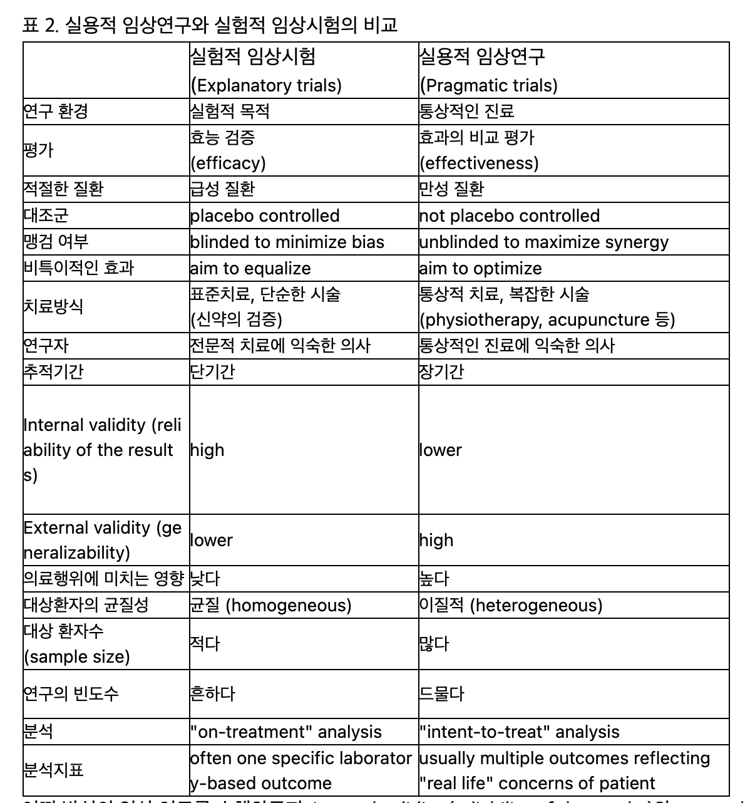

27 근거중심의학 - 임상시험
Evidence based medicine - Clinical trials
27.1 근거중심의학
27.1.1 근거중심의학의 개념
의학에서 정확한 진단(diagnosis)이 가지는 중요성은 아무리 강조해도 지나치지 않을 것이다. 진단이 정해지면, 그에 상응하는 표준 치료1를 행하는 것이 옳으며, 환자의 상황이 특별하거나 표준적 치료에 반응하지 않는다면 다음 단계에 해당되는 차선적 치료를 행하게 된다. 진단에 걸맞는 치료를 행하는 것은 의사의 지식과 숙련도를 반영하는 잣대일 뿐 아니라, 의료 사고를 판별하는 기준이자, 의료 보험 체계를 지탱하는 기본적 축이다.
1 표준 치료(standard treatment or standard of care): 특정 질병이나 질환에 대해 다수의 의학 전문가들이 적합하다고 인정하였으며, 실제 임상에서도 가장 보편적으로 적용되는 치료법. 교과서에 수록되는 치료법이기도 하며, 보험이나 사법체계에서 인정하는 적절한 치료의 기준이 되기도 한다.
그러나 정신질환은 진단에서 치료로 이어지는, 틀에 짜여진 형식에서 약간 비켜간 듯한 느낌을 준다. 물론 DSM이나 ICD와 같은 표준 질병분류체계가 있고, 여전히 진단이 중요시되고 있으나, 실제 임상가들은 진단의 세부항목까지 따지는 것에 대해 큰 중요성을 두지 않고 있다. 더군다나 생물학적 치료와 심리적 치료를 넘나드는 광범위한 치료 수단의 활용은 획일적인 보험체계의 틀에 가두기에는 너무나 유동적이다.
정신약물학이라는 국한된 영역에서도 역시 마찬가지이다. 비정형 항정신병 약물이 등장한 이후, 이들 약물은 조현병 치료제로 쓰일 뿐 아니라, 양극성 장애, 우울증 심지어 가벼운 불안장애나 수면 조절에도 사용된다. 또한 조현병에도 항우울제, 항불안제들이 통상적으로 사용되기 때문에 과연 진단이 치료에 꼭 필요한가라는 의문이 들기도 한다.[1]
소위 근거중심의학(evidence based medicine, EBM)은 과학적 정보에 근거하여 의학적 결정을 내리는 관행을 의미한다.2 물론 의학적 결정을 내리기 위한 임상 관찰과 자료의 중요성은 그리스 시대로 거슬러 올라간다. [2] 그러나, 20세기에 이르러 EBM의 개념은 모든 의료 영역에서 으례 따라야 하는 패러다임으로 진화했다. Eddy3는 근거 중심(evidence-based)이라는 용어를 처음으로 사용했고, Guyatt 등은 1990년대 초에 근거중심의학이라는 용어를 도입하였다.[3,4] 앞에서 소개했듯이 정신과 진료에서 EBM의 도입은 저항도 많았고, 잘 들어맞지 않는 부분도 많다. 이는 조현병 치료를 위시한 정신과 진료에서 증거를 얻고, 얻어진 증거를 평가하며, 더불어 그러한 증거를 치료 결정에 적절하게 적용하는 것이 꽤 까다롭기 때문이다.[5]
2 기존의학과 근거중심의학의 차이점은 다음과 같다. 기존의학에서는 병인과 병태생리에 대한 막연한 추론, 의사 개개인이나 전문가 집단의 임상경험이나 주관적 평가에 의해 진료를 했다면, 근거중심의학에서는 체계적 임상시험, 메타분석과 같이 객관적이고 계량 가능한 증거에 기반하여 진료를 행한다. 전자는 의학자들만이 독점하는 폐쇄된 지식이라면, 후자는 일반인은 물론 환자 및 보호자도 접근할 수 있는 지식이기 때문에, 공유된 의사결정이 가능하게 된다.
3 David Eddy (1941~): 미국의 의사이자, 수학자, 건강제도 분석가이다. 질병의 수학적 모델링, 의학에서의 합리적 의사결정, 임상진료지침의 중요성 등에 대해 연구해왔다.

27.1.2 무작위 배정 임상시험
근거중심의학에서 사용되는 증거에는, 일화적 증례 보고나 비통제 연구 결과도 있지만, 그중 가장 강력한 증거로 채택되는 것은 무엇보다 무작위 배정 임상 시험(randomized clinical trial, RCT)의 결과이다.(그림 27.1) 증례보고나 통제되지 않은 비무작위 혹은 개방형 연구는 연구자 혹은 연구 참여자의 편견, 바이어스를 배제하기 어려우며, 무엇보다 다양한 교란변인(confounding variable)의 효과를 통제할 수 없기 때문에 결과를 얻어놓고도 인과관계를 주장하기 어렵다. 이에 비해 철저한 이중 맹검, 무작위 배정 연구는 순수한 치료적 개입의 효과를 걸러내어 행해진 치료과 치료효과를 낳았다는 인과관계를 주장할 수 있다.
때문에 국가기관에서 신약에 대해 사용허가를 내줄 때에도 반드시 무작위 배정 이중맹검 임상 시험의 자료를 토대로 한다. 근거중심의학의 패러다임이 영향력을 키워갈수록, 무작위 임상시험의 결과는 의학적 의사 결정과 교육, 임상 실습에 커다란 영향을 미친다. 그러나 임상 시험은 타당화와 일반화 측면에서 중대한 한계를 갖는다. 새롭게 등장한 치료법인 효과적인데도 불구하고 이를 입증하는데 실패할 수도 있으며, 반대로 잘못된 결론으로 이끌 수도 있다.[6]
임상 시험에서 환자를 선택하는 과정은 현재 질병분류학의 약점을 더욱 부각시킬 수 있다. 앞서 언급했듯이 똑같은 조현병이라고 해도 너무나 다양한 특성의 환자가 존재하기 마련이며, 진단 경계의 회색 영역에 위치하는 환자도 많다. 임상 시험에는 진단에 애매모호함이 없는 전형적인 환자만 포함되기 마련이며, 이들이 전체를 대표할 수 있는지는 의문이다. 또한 대부분의 임상 시험에서 진단은 정해진 진단 도구를 이용하게 되는데, 이러한 진단 도구 자체가 실제 임상에서 의사들이 체감하는 진단과는 거리가 있다. 게다가 동반 질환이 있는 환자를 배제하는 관행때문에 역시 실제 임상에서 흔히 접하게 되는 환자는 임상 시험에 포함되지 못한다.
또한 임상 시험은 공동의 이익과 개인의 치료 사이에서 과학과 윤리의 충돌을 야기한다. 치료의 효과를 증명하기 위해 위약(placebo)을 사용하는 것이 요구되는데, 위약군에 배당되는 환자들은 실질적으로 치료기회를 놓친다는 점에서 피해를 입는 셈이다. 무작위 임상 시험이 공동선을 달성하기 위해서는 임상의, 의료 정책 입안자 및 임상 진료에 영향을 미치고 평가하는 관계자들이 임상 시험 데이터에 접할 수 있어야 하며, 이 데이터를 제대로 해석할 수 있는 지식과 경험을 갖추고 있어야 한다.[6] 그러나 제약회사가 주관하는 대부분의 임상 시험 데이터는 회사에게 소유권이 있다는 이유로 공개가 제한된다. 미국에서는 임상 시험을 계획할 때 사전에 국가 데이터베이스에 등록하여, 임상 시험의 진행과정을 공개하도록 하였으며, 우리나라에서도 국립보건연구원 산하 임상시험정보서비스(clinical research information service, CRIS)에서 정보를 관리하고 공개하고 있다. 그러나 이런 서비스는 어디까지나 임상시험의 디자인과 진행상황을 보여주는 것이지, 얻어진 데이터가 공개되는 것은 아니다.
27.1.3 임상 시험의 도입과 평가의 표준화
마취보조제로 개발된 클로르프로마진은 조현병 환자들에게 “진정 작용”을 갖는다는 다소 우연한 관찰로부터, 정신약물학의 혁명을 이끌어냈다. 약물이 합성된지 불과 3년 후인 1954년에 미국 식품의약청(FDA)으로부터 승인을 받았지만, 허가를 받기 전에 무작위 배정 이중맹검 연구가 시행된 적은 한번도 없었다. 그럼에도 불구하고 1964 년까지 전세계 약 5천만 명의 사람들이 이 약물로 치료 받았으며, 어느 누구도 약물의 효과에 대해 의심하지 않았다.
그러나 클로르프로마진의 성공에 고무되어 유사한 약물들이 우후죽순처럼 개발되기 시작하자, 이들 약물의 효과를 객관적으로 검증할 수 있는 장치가 필요해졌다. 무작위 배정의 방법론과 결과를 분석하는 통계적 기법도 필요했지만, 그것보다 먼저 갖춰져야 하는 것은 정확히 어떤 환자를 연구에 참여시킬 것인지를 결정하는 진단 기준(diagnostic criteria), 그리고 효과를 판정하기 위한 객관적인 평가 도구(rating scale)였다.
정신과 질환에 대해 합의된 진단 기준이 최초로 마련된 것은 1949년 국제보건기구(WHO)에서 발간한 국제질병분류(international statistical classification of diseases, ICD) 제 6차 개정판이 처음이었다. 1952년에 미국 정신과 학회(American psychiatric association, APA)는 정신 장애 진단 및 통계 편람(diagnostic and statistical manual of mental disorders, DSM) 초판을 발간하였으나, 질병의 목록만 있었을 뿐 개별 장애에 대한 진단 기준이 구체적으로 명시되지는 않았다.
27.1.3.1 진단기준
1960-70년대에는 제대로 된 진단기준도 없었고, 구조화된 진단도구도 전무했기 때문에 당시 연구대상자의 선정기준은 전적으로 의사의 자의적인 판단으로 이루어졌다. 대조군의 선정도 한 병원에서 한개 병동의 전체 환자가 약물 투여군으로 선정된다면, 다른 병동의 전체 환자가 대조군이 되는 등 편의적인 선정이 일반적이었다.[7] 이런 상황을 타개하기 위하여 John Feighner를 비롯한 워싱턴 대학 정신과 연구진은 1972년 소위 Feighner criteria를 발표하였다.(3.2.2 장) 이는 최초의 실행적 진단 기준(operational diagnostic criteria)로서 일련의 진단기준 중 몇 개 이상을 만족하면 특정한 질병으로 진단한다는 형식을 갖추고 있다.[8,9] Feighner criteria와 이를 통해 소개된 실행적 진단 기준의 개념은 즉각 환영받았고, 이는 1978년 발표된 research diagnostic criteria (RDC)를 거쳐 DSM-III에 흡수된다.[10]Feighner criteria와 RDC의 항목들을 상당부분 차용한 DSM-III은 개별 정신질환의 진단 기준들을 제시할 수 있었다. 이는 정신 질환 진단의 타당성과 신뢰성을 향상시켰다는 점에서 향후 임상 연구 및 약물 개발에 있어서 엄청난 영향을 미쳤다.
27.1.3.2 평가도구
최초의 구조화된 진단도구로는 schedule for affective disorders and schizophrenia (SADS)와 현상태검사(present state examination)을 들 수 있다. 전자는 1978년 Endicott와 Spitzer가 research diagnostic criteria (RDC)를 이용하여 진단을 내리는데 필요한 정보를 수집하고 환자의 증상과 기능 수준을 기술하는 것을 목적으로 개발하였으며, 후자는 ICD-9을 반영하여 개발되었다. 그러나 가장 영향력있는 진단도구로는 역시 DSM-III의 발간과 함께 발표된 structured clinical interview for DSM-III-R (SCID)일 것이다.[11] SCID는 이후 DSM이 개정될 때마다 함께 개정되어 현재는 DSM-5를 반영하는 SCID-5까지 나와있다.
이러한 진단도구 이외에도 정신병리의 경중을 평가하기 위한 지표로 최초의 평가도구는 1962년 Overall과 Gorham에 의해 개발된 간이정신평가척도(brief psychiatric rating scale, BPRS)이 있다.[12] 1987년 Stanley Kay 등은 BPRS를 더욱 확장시켜 양성 및 음성증후군 척도(positive and negative syndrome scale, PANSS)를 제작하였으며, 이는 명실공히 현재까지도 가장 널리 사용되는 조현병의 평가도구로 자리잡았다.[13]
27.1.4 메타 분석
이들 평가도구가 개발된 이후 조현병 환자를 대상으로 한 대부분의 임상 시험은 SCID로 진단된 환자를 대상으로 시행하고, PANSS를 통해 결과를 확인하는 식으로 이루어졌다. 진단도구가 표준화되자 임상 시험에 포함되는 환자라면 대체로 어떤 환자들이라는 컨센서스가 생겨나게 되었다. 진단이 통일되고, 효과 판정을 위한 기준이 명확해지면 개별 연구들의 결과를 통합하는 분석, 즉 메타 분석(meta-analysis)이 가능해진다. 1970년대 이후 의학 문헌에서 조금씩 등장하기 시작한 메타 분석은 근거중심의학에서 사용하는 증거 중에서 가장 최상위에 위치한다. 개개 임상 연구는 표본 수가 작아서 충분한 검증력을 갖지 못하지만, 이를 한데 모아 분석하면 충분한 검증력을 확보할 수 있다는 장점이 두드러졌다. 체계적 문헌고찰을 위한 Cochrane library: cochrane review4가 1996년부터 서비스를 개시하였고, 여기에는 각종 임상적 질문에 대해 관련된 연구 문헌들을 종합하여 내려진 근거들이 나열되어 있다.
4 Cochrane review: 스코틀랜드의 의사 Archibald Leman Cochrane (1909~1988)은 평생 무작위 임상시험의 중요성과 그 결과들을 종합할 수단을 마련해야함을 역설하였다. 이에 영향을 받은 옥스포드 대학의 Iain Chalmers (1943~)은 1993년 Cochrane Collaboration (현재는 그냥 Cochrane이라 부름)을 설립한다. 현재 전세계 30,000명 이상의 자원 연구자들이 체계적 문헌 분석과 메타 분석을 하여 그 결과를 Cochrane library에 등재하고 있으며, 이는 Cochrane Database of Systematic Reviews를 통해 서비스 가입자에게 공개된다.[14]
더불어 표준화된 평가도구의 보급은 임상 연구의 세계화를 가능하게 만든 계기가 되었다. 정신약물학의 초창기에는 미국와 유럽에 국한된 제한된 연구 기관에서만 임상 연구가 가능했으나, 전세계 공통으로 적용되는 진단 기준, 각국어로 번역된 진단 도구 등의 보급으로 한국을 비롯하여 중국, 인도, 라틴 아메리카 등이 활발히 임상 연구에 참여하고 있다. 이는 또한 거대 다국적 제약기업들이 판로를 전세계로 확대한 때문이기도 하다. 임상 연구의 상업화와 세계화로 규모가 점점 더 커지게 되었으며, 다양한 환자군이 포함됨으로 인해 하위집단 분석(subgroup analysis)이 보다 정교해졌다.
27.1.5 표준화에 대한 비판
한편 이러한 국제화, 표준화는 많은 발전을 가져왔지만 동시에 어두운 그림자도 드리우고 있다. 가장 큰 문제는 SCID로 대표되는 소위 실행적 진단 기준5이 과연 임상가의 경험과 일치하는가라는 점이다. 또한 조현병 증상의 개선을 거의 대부분 PANSS로 평가하는 만큼, PANSS에 반영되지 않는 변화는 호전의 증거로 채택되지 않는다는 문제도 있다. DSM 체제에 대해 비판적인 일부 학자들은 미국정신의학회가 정신질환 진단의 신뢰도를 높이기 위해 타당도를 포기하였다고 주장한다. 즉 환자 상태에 부합하는 특정 진단 항목의 갯수로 진단을 확정짓는 부자연스러운 과정을 수용함으로써, 정말로 조현병이 어떤 것인지에 대한 핵심을 상실해버렸다는 것이다.[16] DSM 체제가 확고해지면서 후대에 교육받은 정신과 의사들은 마치 DSM 진단기준이 질병 자체인 것처럼 착각해버리는, 그야말로 주객인 전도된 상황이 발생하기 하였다. Van Praag는 이미 1993년에 쓴 논문에서, DSM을 최초에 제정한 의사들은 진단기준의 모호성과 실제 임상에서의 한계에 대해 충분히 이해한 상태에서 DSM을 만들었지만, 이후 이러한 모호성과 혼란은 수치와, 계량화 속에 묻혀버렸고, 진단을 너무나 과대평가하는 현재의 추세 때문에 가지 말았어야 할 길을 가버렸다고 지적하고 있다.[17]
5 실행적 진단기준(operational diagnostic criteria): 진단의 신뢰성을 높이기 위해 1970년대 Feighner 등 속한 Washington 대학 연구진이 도입한 진단체계. 일단 병인에 대한 선입관을 모두 내려놓고 진단에 특징적인 증상과 징후를 나열한 다음, 그 중 해당되는 것이 몇 개 이상이고, 동시에 배제기준에 해당되지 않으면 진단을 확정하는 식으로 이루어진다. 신뢰도가 극적으로 높아진 것은 분명하나, 정신과 진단을 checklist 진단으로 바꿔놓아 증상/징후 들 사이의 유기적인 관계를 무시했다는 비판을 받는다. 이는 전형적인 진단 원형과 얼마나 유사한가에 의해 진단을 확정하는 prototype diagnosis와 대조된다.[15] “실행적(operational)”이라는 이름은 정말 맞는지 틀리는지 여부는 지금으로서는 알 수 없지만, 일단 다음 과정이 진행되도록 하기 위해 임시로 정해놓은 기준이라는 의미로 사용되었다.
27.1.6 조현병의 질병분류학적 지위와 치료의 타깃
윗절에서 언급한 바와 같이, 근거중심의학의 도래와 임상 시험에 대한 과도한 의존은 조현병 치료에 있어서 임상가는 무엇을 타깃으로 하고 있는가를 새삼 되돌아보게 한다.[18] 근거중심의학의 토대는 정신과 진단에 대한 실제론(realism)에 있다. 즉 “인간에게 주관적 고통을 야기하거나, 기능의 상실을 불러오는 현상을 증상 혹은 징후라 칭한다. 만약 일군의 증상 및 징후가 높은 빈도로 함께 동반되어 나타난다면, 이를 증후군(syndrome)이라 할 수 있다. 그런데 이러한 증후군이 등장하는 이유는 그 기저에 질병분류학적 기본단위(nosological entity)라고 할 수 있는 질병(disease)이 존재하기 때문이다”라는 논리이다. 이렇게 가정된 질병을 실재하는 것으로 간주한 상태에서, 그 원인, 병리현상 및 예후를 따지는 것이 의학의 궁극적 과제가 되었다. 모든 치료는 이 질병에 맞추어져 있으며, 질병의 병태생리를 정상화시킴으로써 제반 증상/징후들을 소실시키려 노력한다. 근거중심의학은 이러한 질병개념에 충실하기 때문에, 진단이 무엇보다도 중요한 지위를 차지한다.
그러나 실제 임상에서의 경험을 되짚어보면, 이러한 이상과는 큰 거리가 있다. 대부분의 치료는 개개 증상 및 징후를 타깃으로 하고 있으며, 치료 성과가 있고 없음 역시 증상 및 징후가 얼마나 줄어드는가, 그리고 환자가 주관적으로 얼마나 편안해하는가를 토대로 결정된다.[19] 병존질환의 문제 역시 마찬가지이다. 질병분류체계에 의하면 조현병 환자가 우울 증상을 보이는 경우, 조현병과 우울증이라는 개개 질병이 병존하는 것으로 진단한다. 그러나 정신병적 증상에 시달리고, 부적응으로 인해 사회로부터 소외되는 환자가 우울해지는 것은 정상적인 심리반응의 일환일 수도 있다. 환자를 직접 치료하는 의사들은 이를 구분하여 상황에 맞게 환자를 돕고자 하지만, 근거중심의학이나 규정에 매인 치료 알고리즘은 임상 상황의 미묘한 뉘앙스까지 고려하지 못한다.
따라서 “조현병의 약물 치료”라는 야심찬 구호 역시 조심스레 이해되어야 한다. 조현병이라는 질병이 실제로 존재하는 것인지, 아니면 진단의 신뢰도를 높이고자 하는 목표 하에 인위적으로 만들어진 구성개념(construct)인지는 여전히 확인되지 않고 있다. 해당 증상의 개수를 따져보는 것 외에 믿을만한 진단기법이 있는 것도 아니요, 증상이 수그러드는 것 말고 질병의 호전 여부를 확인해볼 수 있는 검사 방법이 있는 것도 아니다. 정신약물학의 첫 장을 열었던 클로르프로마진이 해결했던 문제는 무엇보다 환자를 진정시키는 것이었고, 운좋게도 환각과 망상을 경감시키는 효과를 발휘했던 것이다. 그러나 환각과 망상을 줄여준다고 해서 조현병이 과연 나아지는 것인지는 의문의 여지가 있다. 조현병이 만성화되면 양성 증상의 비중이 줄어들고 음성/인지 증상이 더 두드러진다. 그렇다고 해서 조현병이 호전되고 있다고 말할 수는 없는 노릇이다.
27.2 주요 임상 시험들
근거중심의학의 한계를 분명히 감안한다 할 지라도, 여전히 조현병 치료의 근거를 확립하고자 했던 수많은 연구자들의 노력을 간과할 수 없다. 정형 항정신병 약물이 처음 도입되었을 때, 거의 모든 의사들과 연구자들은 약물의 효과와 효용성에 의심을 품지 않았다. 그도 그럴 것이 이제까지 경험해보지 못했던 긍정적인 변화를 자신의 눈으로 직접 목격할 수 있었기 때문이다. 그러나 추체외로 부작용의 문제, 지연 운동 이상증 등의 부작용 문제가 불거지면서 과연 예상되는 이득이 피해를 정당화할 수 있는 지에 대한 고민이 시작되었다.[20]
이러한 고민은 비정형 항정신병 약물의 도입으로 인해 더욱 깊어졌다. 새로운 항정신병 약물은 운동부작용의 위험을 획기적으로 낮추었기 때문에, 이전의 약보다 개선되었다는 것은 의문의 여지가 없었다. 그러나 거대 제약사들이 독점적으로 제조, 공급하면서 약가가 현저하게 상승되었다. 더군다나 대사성 부작용이라는 새로운 문제가 불거지면서, 부풀려진 비용 만큼 장점이 있는 것인지에 대해 많은 의사들과 정책결정자들은 의문을 품기 시작하였다. 이미 공정하고 체계적인 임상 시험의 방법론적 틀이 확립되어 있었고, 다기관 공동연구가 일상화되었으며, 약물경제학(pharmacoeconomics)이라는 새로운 학문이 싹트면서, 비정형 항정신병 약물의 실상을 밝히기 위한 대규모 임상 시험이 기획, 진행되었다.
이러한 연구들은 다음 질문에 답하고자 하였다. 첫째, 비정형 항정신병 약물은 정형 약물에 비해 치료 효과가 뛰어난가? 둘째, 전자는 후자에 비해 높은 안전성을 지니는가? 셋째, 전자가 갖는 우수성은 높은 비용을 상쇄할만한 가치가 있는가? 그리고 마지막으로 이러한 장점은 실제 임상에서 환자의 높은 삶의 질로 이어지는가?
27.2.1 Clinical Antipsychotic Trials of Intervention Effectiveness (CATIE)
이같은 질문에 답하고자 한 연구 중 가장 유명한 것은 미국 국립 정신보건 연구소(NIMH)의 주도로 행해진 CATIE 연구일 것이다.[21] 이 연구는 만성 조현병 환자에 대한 비정형 항정신병 약물의 효과를 실제 임상에서 검증한 것으로, 그 후의 조현병 약물 치료에 크나큰 영향을 주게 된다. 연구는 2001년에서 2004년 사이에 미국 전역의 57개 도시에서 무려 1,500명 이상의 환자를 대상으로 행해졌다. 모두 세단계로 이루어졌는데, 첫번째 단계는 무작위 배정 이중 맹검에 의하여 정형 항정신병 약물로는 퍼페나진(perphenazine), 그리고 비정형 약물로는 올란자핀, 퀘티아핀, 리스페리돈, 지프라시돈의 다섯개 약물 중 하나를 18개월 동안 투여받는 것이었다. 퍼페나진을 사용하다가 중도에 탈락된 환자는 다시 나머지 비정형 약물 중 하나에 배정되어 관찰을 지속하였다.
두번째 단계는 1단계에서 모종의 이유로 중도 탈락한 환자를 대상으로 역시 무작위 배정으로 클로자핀, 올란자핀, 퀘티아핀, 리스페리돈 중 하나를 역시 18개월 동안 투여받는 것이었다. 이때는 이중맹검은 시행하지 않았고, 개방형으로 진행되었다. 마지막 3단계에서는 1,2 단계에서 중도 탈락된 환자를 대상으로 이번에는 의사와 환자의 논의 하에 다음 약물을 선택하게 하였다. 모든 단계에서 가장 중요한 결과 변수는 “모든 이유에 의한 투약 중지” 즉 중도 탈락률과 중도 탈락할 때까지의 기간이었다.
정형 약물로 퍼페나진이 선정된 것, 그리고 일차적 결과변수가 PANSS 점수의 변화가 아니라 중도 탈락률이었던 것은 기존의 임상 시험과 차별화되는 점이다. 퍼페나진이 선정된 것은 그나마 정형 약물 중에서 가장 추체외로 증후군의 위험이 낮은 약으로 평가되었기 때문이다. 한편 중도 탈락률이 선정된 이유는, CATIE 연구의 설계자들이 실제 임상에서의 효과를 최대한 반영하기를 원했기 때문이다. PANSS는 연구상황이라는 매우 인위적인 상황에서 평가되지만, 중도 탈락은 주치의나 환자가 그 약의 유효성, 부작용 등을 살펴보면서, 무언가 문제가 있다고 판단을 내렸음을 반영하는 예민한 지표이기 때문이다.
1단계 연구의 결과를 보면 올란자핀이 중도 탈락률이 가장 낮았다는 것이 확인되었다. 그러나 올란자핀 군은 체중 증가가 가장 심했고, 대사성 부작용의 비율도 가장 높았다. 반면 심리사회적 기능, 증상, 삶의 질 등에 있어서는 시험 약물간의 차이를 발견할 수 없었다. 결과적으로 비용-효과 비가 가장 높은 약물은 perphenazine인 것으로 나타났다.[22]
2단계 연구에서는 클로자핀이 추가되었는데, 이는 리스페리돈, 퀘티아핀 등에 비해 우수한 효과를 나타내었다. 이에 반해 올란자핀과 클로자핀의 차이는 크게 두드러지지 않았다. 마지막 3단계 연구에서 증상이 심한 환자들은 클로자핀 혹은 여러 개의 항정신병 약물을 사용하는 다약제 복용(polypharmacy)을 선택했고, 체중 증가가 심했던 환자들은 아리피프라졸과 지프라시돈을 선택하는 경향을 보였다.[23]
표면적으로 CATIE 연구는 다양한 비정형 항정신병 약물 같의 우열을 비교한 것같지만, 얻어진 결과가 갖는 중요성은 다른 데 있다. 아마도 가장 두드러진 발견은 1단계 시험이 행해진 18개월 동안 중도에 약물을 바꾼 비율이 무려 74%에 이르렀다는 점이다. 게다가 약물을 꾸준히 유지했든, 중도에 바꿨든 환자의 치료 성과는 대동소이했다는 것이다.[24] 이러한 결과는 의사이든 환자이든 현재 사용되고 있는 항정신병 약물에 그다지 만족하지 못하고 있으며, 그래서 약을 바꿨다고 해도 별반 나은 점은 없었다는 뜻으로 해석된다.
두번째로 논란을 일으킨 발견은 퍼페나진과 비교하여 비정형 약물이 효능이나 부작용 면에서 통계적으로 유의한 차이를 보이지 못했고, 따라서 비용-효과 분석에서 열등하였다는 점이다. 이는 의사, 학계, 환자 단체, 제약사 및 정책 결정자 사이에 강한 반발과 광범위한 논의를 불러일으켰다.[25] 물론 정형 약물의 대표 겪으로 조현병 치료에 거의 쓰이지 않던 퍼페나진을 선택한 것은 예상 밖이다. 만약 퍼페나진 대신 할로페리돌을 사용했다면 전혀 다른 결과가 얻어졌을 수도 있다. 또한 18개월이라는 기간이 추체외로 증상이나 지연 운동 이상증이 나타날 만큼 충분히 오랜 기간이었는지에 대한 의문도 남는다.[26]
비정형 약물이 퍼페나진에 비해 뚜렷한 장점을 보이지 못했음에 비해, 체중 증가와 대사성 증상 발현에 있어서는 뚜렷한 위험 요인을 안고 있었다. 클로자핀과 함께 올란자핀은 두드러지게 높은 체중 증가와 대사 증후군의 발생률을 보였다. 올란자핀 군에서는 체중 증가, 대사에 대한 영향때문에 투약을 중지한 비율이 9%로 다른 약물 군보다도 유의하게 많았다. 또 7% 이상의 체중 증가가 생긴 비율이 30%로, 다른 항정신병 약물 군의 7-16%보다고 유의하게 높았다. 이 밖에도 당화 헤모글로빈(HbA1C), 총 콜레스테롤 치, 중성 지방 치 등이 치료 기간을 보정한다 해도 타 약물 군에 비해 유의하게 높았다. 이러한 문제가 환자의 삶의 질이나 기대 수명에 어떤 악영향을 미치는 지는 앞으로도 끊임없는 논란 거리가 될 것이다. 항정신병 약물의 단기 효과는 물론 자살 위험을 낮추고 건강을 해칠 수 있는 위험한 행동을 줄여 기대 수명을 늘이는 것이지만, 길게 보았을 때는 역으로 만성 성인병의 유병률을 높여 기대 수명을 감소시킬 가능성도 있다.[27,28]
CATIE 연구는 취지는 좋았지만, 지나친 야심때문에 결과의 신빙성을 해친 사례라 할 수 있다. 다수의 환자가 참여한 대규모 연구인 것은 맞지만 너무나 많은 약물이 동시에 비교되었고, 앞에서 탈락된 환자가 다음 단계의 참여자가 되는 연구설계로 인해 각각의 약물 군을 대등하게 비교하기가 어려웠다. 이로 인해 환자의 세부 그룹 분류가 너무나 복잡해졌고, 측정치도 많고 통계적 시험도 너무 많아 다중 비교로 인한 통계학적 오류의 위험도 커졌다. 그럼에도 불구하고, 비정형 항정신병 약물에 대한 맹신적인 믿음에 일침을 가했다는 점에서 큰 의미를 가지며, 제약회사 주도가 아니라 공정한 국가 기관에 의해 이루어졌기 때문에 신뢰할만 하다는 성과를 내었다. 2005년 첫번째 연구 결과[29]가 발표된 이후 현재까지도 원자료를 재분석, 재해석하는 과정이 진행되고 있으며, 그 때마다 조금씩 다른 통찰을 제시하고 있다.[30]
27.2.2 Cost Utility of the Latest Antipsychotic Drugs in Schizophrenia Study (CUtLASS)
CATIE가 미국에서 행해진 연구라면, CUtLASS는 영국에서 행해진 연구로 그 목적은 역시 비정형 항정신병 약물의 비용-효과적 이점을 검증하는데 있었다.[31] CUtLASS는 CATIE 보다는 훨씬 소규모 연구였는데, 참여한 연구 대상자도 227명에 불과했으며, 이중 맹검은 적용되지 않았다. 약물 선택에 있어서도, 정형이냐 비정형이냐만 무작위 배정되었을 뿐 개개 약물의 선택은 의사와 환자의 판단에 맡겨졌다. 1단계 CUtLASS 연구에서는 총 13개의 정형 항정신병 약물과 4개의 비정형 약물이 사용되었다. 1단계 연구의 주 목적은 클로자핀을 제외한 비정형 항정신병 약물이 정형 약물에 비해 삶의 질 향상 측면에서 우월하리라는 가정을 확인하는 것이었다. 그러나 결과적으로 증상이나 삶의 질 측면에서 비정형 약물이 우수하다는 증거는 찾지 못하였다. 심지어 추체외로 증후군의 발생 빈도에서도 두 군은 유의한 차이를 보이지 않았다. 이후 이어진 2단계 CUtLASS 연구에서는 클로자핀과 기타 비정형 약물간의 비교가 이루어졌는데, 여기서는 예상한 바대로 클로자핀이 증상 호전면에서 우월하다는 것이 확인되었다.
이 연구는 CATIE와 비슷한 시기에 이루어졌고, 처음 연구 목적과는 달리 비정형 약물에 대한 부풀려진 평가를 무너뜨리는데 일조했다는 면에서 주목받긴 하지만, 작은 규모나 허술한 방법론 등으로 하여 학문적 의의는 상대적으로 작다. 가장 많이 사용된 정형 항정신병 약물이 비정형성을 지닌다고 알려진 설프라이드라는 점도 연구 결과의 파급력을 떨어뜨리는 요인 중 하나이다.[32,33]
27.2.3 Schizophrenia Outpatient Health Outcomes, SOHO
비슷한 시기에 유럽에서도 비정형 약물의 우수성을 확인하고자 대규모 연구가 진행되었다. 이 연구는 무작위 배정도 이중 맹검도 시행하지 않았으며, 최대한 실제 임상을 반영하는 자연적 연구로 진행되었다. 눈여겨 보아야 할 점은 방대한 규모인데, 유럽 전역에서 천명 이상의 의사가 연구자로 참여했고, 모집된 표본 수는 10,972명에 이른다.[34] 타 연구에 비해 상당히 장기간인 3년간 관찰이 이루어졌고, 중도 탈락률도 낮아 12개월 후 유지율은 약 85%에 이르렀다. 이는 74%가 중도 탈락한 CATIE 연구와 대조적인데, 아무래도 CATIE 연구에서는 약물을 중도에 바꾼다는 것이 애초에 선택지로 들어가있었던 것이 원인이 아닌가 싶다.[24]
충분한 기간 동안 추적 관찰이 이루어졌기 때문에 다양한 임상 변인에 대해 변화 양상을 측정하는 것이 가능하였다. 그 결과를 요약하면, 다른 정형 약물이나 비정형 약물에 비해 클로자핀과 올란자핀이 효과 면에서 우수하였으며, 정형 약물에 비해 비정형 약물은 확실히 추체외로 증후군이나 지연 운동 이상증의 발현 비율이 낮았다. CATIE에서처럼, quetiapine은 효과면에서 다른 항정신병 약물들과 비교할 때 다소 효과가 낮았다. 이외에도 단일 약물을 사용할 때보다 다약제 복용 시 좀더 효과가 좋았으며, 체중 증가는 여전히 클로자핀과 올란자핀 투여 군이 가장 높았으나, 타 비정형 약물과의 차이는 예상보다 크지 않았다는 것(첫 6개월 동안 평균 1.3kg 차이)을 발견할 수 있었다.
이 연구는 전반적인 비정형 약물의 우수성을 입증한 의미있는 연구라고 할 수 있다. 이 연구는 올란자핀을 개발 판매하고 있는 Eli Lilly 사의 지원 하에 이루어졌고, 애초의 연구 목적도 올란자핀의 우수성을 부각시키기 위한 것이었다. 그래서인지 전체 환자군의 절반 정도가 올란자핀을 투여 받고 있었다는 점에서 신뢰도가 반감되고 있다.[34]
27.2.4 European First Episode Schizophrenia Trial (EUFEST)
앞서 살펴본 세 개의 대규모 임상 시험이 주로 만성 조현병 환자를 중심으로 행해진 데 비해, EUFEST 연구는 초발 환자를 대상으로 했다는 특징이 있다. 현재 삽화가 첫번째 삽화이고, 이전에 항정신병 약물에 노출된 경험이 없는 환자를 대상으로 아미설프라이드, 퀘티아핀, 올란자핀, 지프라시돈 그리고 저용량의 할로페리돌을 무작위 배정하여 1년간 추적 관찰하였다.(Fleischhacker et al., 2005)
모두 498명이 환자가 참여했는데, 일차 결과변수인 중도 탈락률이 할로페리돌의 경우 72%에 육박한 반면, 비정형 약물은 퀘티아핀(53%), 지프라시돈(45%), 아미설프라이드(40%), 올란자핀(33%) 순으로 높았다. 하지만 PANSS로 측정한 증상 호전의 정도는 약물 간에 의미있는 차이를 보이지 않았다. 예상대로 추체외로 증후군의 발현 비율은 할로페리돌 군이 두 배이상 높았으며, 좌불안석의 비율도 뚜렷이 높았다. 중성지방, 콜레스테롤, 공복시 인슐린 등 대사 증후군의 지표는 약물군간에 차이가 없었으나, 체중 증가는 올란자핀 군이 유의하게 높았다.[35]
이 연구에서 감안해야할 사항은 허용된 할로페리돌의 최대 용량이 하루 4mg에 불과했다는 것이다. 이는 할로페리돌과 비정형 약물을 비교했던 기존 연구가 할로페리돌의 높은 용량 때문에 비판받는 것을 의식했던 것으로 보이는데, 오히려 용량이 너무 낮아 효과 부족때문에 중도 탈락하는 사례가 많지 않았나 의구심이 든다. 반면 이렇게 조심스럽게 썼는데도 추체외로 증상이나 좌불안석이 거의 30%에 달하는 환자에게 나타나, 초발 환자에게는 역시 비정형 약물이 부작용 면에서 우위에 있음을 확인시켜 주었다.
27.2.5 대규모 임상 시험이 우리에게 알려준 것
2000년대 초 비정형 항정신병 약물이 임상에 도입되면서 의사와 환자들은 새로운 희망을 품게 되었으나, 갑자기 약값이 수십배로 치솟으면서 새롭게 도입된 약물이 그 값을 다하는지 의심스러워 하는 이가 많았다. 특히 정책입안자, 보험관계자들은 불필요한 의료비 상승에 대해 과민하게 반응하였으며, 어떻게든 비정형 약물의 비용대비 효능을 깍아내리고자 하였다. 게다가 거대 제약사의 공격적 마케팅에 대한 반작용으로 임상 연구가 상업적 목적으로 변질되지 않는가에 대해 자성의 목소리가 높아졌다.
CATIE, CUtLASS와 같은 대규모 임상 시험은 제약사의 후원 없이 정부 주도 혹은 연구자 주도로 이루어졌고, 그래서인지 비정형 약물의 우수성을 입증하는데 실패하였다. 반면 제약사 주도로 이루어진 SOHO 연구는 후원사 약물의 우수성을 입증하는데 보기좋게 성공하였다. 이러한 결과를 눈앞에 둔 의사와 환자는 곤혹스러울 수 밖에 없다. 약물 연구와 상업성은 분리될 수 없는 만큼, 신약의 우수성을 강조하는 많은 임상 연구의 자료들은 이미 신뢰성이 훼손되었다고 여겨야 할지도 모른다. 아니면, 아무리 그렇다 해도 엄격한 방법론과 객관적인 검증을 거쳤기 때문에 실제 임상에 적극 반영해야 할런지도 모른다.
CATIE와 CUtLASS의 연구에 참여했던 Lewis와 Lieberman은 “CATIE와 CUtLASS : 우리가 진실을 다룰 수 있을까?”라는 논문에서 두 연구의 함의에 대해 논하고 있다.[32] 비록 두 연구를 통해 비정형 약물이 정형 약물에 비해 효과 면에서 뚜렷한 장점을 지니는 지에 대해선 확인하지 못했지만, 비정형 약물의 도입을 통해 정형 약물의 사용 전략을 되돌아보는 기회가 되었고, 치료의 목표가 단순히 증상의 경감만이 아니라는 것도 명확해졌다. 추체외로 증후군이 치료에 도움이 된다는 구태의연한 사고방식은 진실이 아닌 것으로 판명났다. 정형 약물도 용량을 줄이고 부작용을 적극 조절한다면, 비정형 약물 만큼의 효과를 거둘 수 있었다. 비록 비정형 약물의 대사성 부작용 위험이 상당히 크다는 것이 발견되었으나, 정형 약물 역시 크게 차이나지 않는다는 것도 강조되었다. 약물 복용에 수반되는 불쾌감을 줄여서 순응도를 높이는 것은 약물의 직접 효과만큼이나 중요하다는 것 역시 새로이 주목하게된 요소들이다.
상기한 대규모 임상 연구 이후, 더 이상 유사한 규모의 연구는 행해지지 않았다. 비정형 약물의 특허가 만료되고, 복제약(generic drug)이 쏟아져 나오면서 약가도 저렴해졌다. 이제는 약물경제학적 논란도 수그러들었고, 오히려 재발 방지 및 입원 횟수 감소를 통해 더 경제적으로 이득을 가져온다는 것이 정론으로 자리잡았다. 정형 약물, 비정형 약물을 구분하는 것의 중요성 또한 점점 희미해져가는 추세로, 비정형 약물이 정형 약물을 대체했다기 보다는 훨씬 더 넓은 선택권을 제공해주었다는 식으로 받아들여지고 있다.[33]
27.3 임상 시험 결과의 실제 진료 적용 가능성
27.3.1 임상 시험 상황과 실제 진료 상황과의 괴리
1948년 영국에서 스트렙토마이신의 효과에 대한 검증이 이루어진 이후, 무작위, 위약대조 임상 시험은 약물 연구가 추구해야 하는 전형으로 자리 잡았다.[36] 약물을 비롯한 치료적 중재의 순수한 효과를 가려내려면, 기타 수많은 교란 변수의 영향을 최대한 차단해야 하고, 이를 가능케 하는 연구 방법은 현재로서는 무작위, 위약대조 시험 밖에 없다. 그러나 의사들은 임상 시험 결과가 “어떤 조건에서, 어떤 환자에게, 어떤 치료가 효과가 있는지”에 대한 궁금증을 풀어주지 못한다고 느낀다. 즉 통제된 조건에서 효과와 안전성을 입증하는 3상 시험 결과가 실제 임상에서 유효성을 검증하는 4상 시험에서 재현되지는 않는다. 유효성(efficacy), 즉 이상적인 연구 상황에서 나타나는 약의 잠재적 효과와, 효과성(effectiveness), 즉 실제 임상 상황에서 드러나는 약의 효과는 전혀 다를 수 있다.
신약 허가를 위한 통제된 임상 시험은 3상 시험에 해당한다. 이는 유효성 입증 목적의 연구로, 성공 가능성을 최대화한 이상적인 조건에서 약물이 어떻게 작동하는지를 검증하는 데 있다. 즉 “고정된 연구 대상이나 조건에서 연구 결과가 참이다”라는 내적 타당도를 최대화하기 위해, 대상이나 조건을 까다롭게 규정한다. 그래서 임상 시험의 연구계획서에는 누가 피험자가 되는지, 어떤 조건에 맞아야 연구에 참여할 수 있는지, 어떤 경우에 탈락하게 되는지, 누가 어떻게 치료하는지, 그 효과는 어떻게 재는 지에 대한 내용이 상세히 적혀있다.
이러한 조건들은 실제 임상 상황과 동떨어져 있을 수 밖에 없다. 중도탈락하거나 내약성에 문제가 있을 것 같은 피험자는 자동적으로 배제된다.6 임상 시험에서 얻어진 데이터를 실제 진료에 적용하려면, 이러한 조건에 맞지 않는 환자에 대해서도 일반화 즉 외삽(extrapolation)을 해야 하는데, 이는 이미 타당성을 상실했다고 보아야 한다. 단적인 예로, 임상 시험에는 자살 위험이 있는 환자는 포함시키기 않는다. 만약 임상 시험 중에 환자가 자살이라도 하며 소송/배상 등 법적 문제가 뒤따르고, 윤리적 논란도 적지 않기 때문이다. 그런데 만약 임상시험 자료를 재분석한 연구에서 투여군과 대조군의 자살률에 유의한 차이가 있다는 것이 밝혀졌다고 하자. 경솔한 연구자라면 이를 마치 약물의 자살 예방 효과를 주장할 지 모르지만, 애초에 심각한 자살 위험이 있는 대상은 모두 빠져있다는 것을 고려하면, 유용한 정보라고 보기 어렵다.
6 예를 들어 65세 이상 고령자, 임산부, 신체질환이 동반되거나, 약물남용 병력이 있는 경우, 자살 위험이 의심되는 환자는 예외없이 임상시험 배제 기준에 해당된다.
이런 극단적인 예가 아니더라도, 임상 시험에서 얻은 결과를 실제 진료에서 기대하기는 어렵다. 임상 연구가 진행되는 센터는 숙련된 의사들이 배치된 일정 규모 이상의 대학병원 내지 종합병원들이다. 연구진과 치료진은 좀더 환자 치료에 공을 들이며, 피험자는 프로토콜에 의해 치료진과 더 자주, 더 많은 시간 접촉할 수 있다. 애초에 임상 시험에 참여하는 환자들은 협조가 잘 되는 환자들이며, 치료나 검사가 무료로 제공되고 일정 수준의 사례비까지 제공되는 상황에서 더더욱 치료에 순순히 응한다. 이런 이상적인 조현병 환자를 실제 임상에서 얼마나 만날 수 있을까 마음속에 그려본다면 그 괴리를 실감할 수 있다. 또한 임상 시험은 비용이나 관리 등 여러가지 문제때문에, 치료 효과가 통계적 차이를 보이는 가장 최소한의 기간으로 정해진다. 때문에 1년 이상 장기관찰하는 임상 시험을 찾기란 매우 어렵다.
27.3.2 실용적 임상 연구
통제된 임상 연구를 유효성 연구(efficacy trial)라고 한다면, 좀더 임상 실제를 반영하도록 고안한 방법이 효과성 연구(effectiveness trial)이다. 효과성 연구는 보다 일반적으로는 무작위 임상 연구(RCT)와 비교하여 실용적 임상 연구(pragmatic clinical trial, PCT)라 칭해지며, 다른 말로 자연적 연구(naturalistic study)라 불린다. 물론 RCT와 PCT는 각각 내적 타당도와 외적 타당도를 잇는 연속선상에서 어느 한쪽에 치중할 뿐 전적으로 다른 범주의 연구는 아니다. PCT의 목적은 임상 실제와 흡사한 조건에서 치료의 효과, 위험, 비용 등을 검증하여 임상 시험에서 제공하지 못하는 의문에 실용적인 해답을 제공하고, 일반화 가능성을 최대화하는 데 있다.(그림 27.2)

PCT에서는 선정 기준이 매우 넓고 배제 기준은 대개 안전성에서 뚜렷한 문제가 있는 경우로 국한된다. 치료 방식도 대체로 주치의의 임상적 결정에 맡긴다. 또한 일반화 가능성을 높이기 위해 다양한 피험자를 방대한 규모로 모집한다. 전형적인 RCT에서는 흔히 군당 50-100명을 모집하는데 비해 PCT에서는 1,000명 이상의 환자를 모집한다. PCT 연구에서는 이렇게 모집된 연구대상이 조사하고자 하는 집단을 어떻게 폭넓게 대표할 수 있는 지를 기술해야 한다.
효과성 평가를 위해 증상의 개선뿐만이 아니라 삶의 질이나 사회적, 직업적 기능, 의료 이용 정도 등 다양한 결과변수가 선정되며, 좀 더 장기적인 기간 동안의 변화에 초점을 맞춘다. Nasrallah 등[37]은 조현병 치료의 효과성에 포함되어야 할 요소로 증상의 장기적인 감소, 치료로 인한 부담(부작용)의 감소, 환자와 가족 및 사회가 질병 때문에 겪는 부담의 감소, 건강한 행동 방식의 장기적인 증가와 만족감의 회복 등을 제시한 바 있다.
연구는 연구 센터가 아니라 일차 의료기관을 비롯한 다양한 기관에서 이루어진다. 치료는 실제 임상에서 일어날 수 있는 가변성을 감안하여 유연하게 제공된다. 연구진이나 피험자가 원하는 치료나 용량, 다른 치료법의 병행, 새로운 치료로의 교체 등이 융통성 있게 시행된다. 치료 순응도는 중도 탈락률은 통제해야 할 변수가 아니라 그 자체가 의미있는 결과 변수가 되기도 한다.
이와 같은 방법은 임상 실제에서 제기되는 의문에 해답을 줄 수 있을지 모르지만, 여러 가지 난점을 안고 있다. RCT에 비해 환자 한명 당 비용은 저렴한 편이나, 참여 대상사 수가 많다보니 연구 계획을 수립하고 조율하고 진행하는데 더 많은 시간과 자원이 요구된다. 또한 비 연구센터 위주의 다기관이 참여하다보니, 자료를 추적하고 그 질을 관리하며, 연구진 간의 소통과 보고, 예외적 상황의 처리 등에 방대한 노력이 필요하다.
이러한 방법론 상의 난점보다 더 중요한 것은 과연 PCT 연구 결과를 얼마나 믿을 수 있을 것이냐는 점이다. 무작위 배정도 이루어지지 않고, 이중 맹검 그나마 단일 맹검 조차 이루어지지 않은 상황에서 행한 평가가 얼마나 확증 편향에서 자유로울 수 있을 지는 의문이다. 워낙에 다양한 환자군과 서로 조금씩 다른 임상 상황이 개입되다보니, 치료 효과를 평균내어 버리면 그러한 독특한 상황에 대한 정보고 소실된다. 역으로 각 상황들에 대해 하위 집단 분석을 하다보면 통게적 검증력을 잃게 된다. 따라서 PCT는 치료법의 비교 우위를 결정하는데는 적당하지 않으며, 얻어질 결과를 인과적으로 해석하는 것도 부적절하다. 그보다는, 해당 치료가 진료 행태에 어떤 변화를 가져올 수 있는 지에 대한 기술적(descriptive) 자료 정도로 받아들이는 것이 바람직하다.[38]